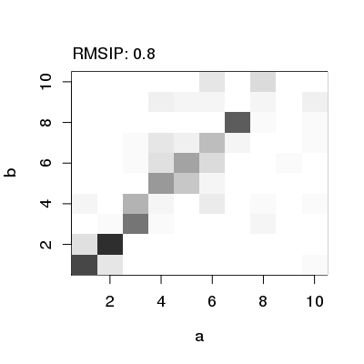

plot(x, xlab = NULL, ylab = NULL, col = gray(50:0/50), zlim = c(0, 1), ...)
rmsip. image. Produces a heat plot of RMSIP (Root mean square inner product) for the visualization of modes similarity.
plot.rmsip produces a color image with the function
image.
Called for its effect.
Grant, B.J. et al. (2006) Bioinformatics 22, 2695--2696.
## Read PDB structure pdb <- read.pdb("1hel")Note: Accessing online PDB file HEADER HYDROLASE(O-GLYCOSYL) 10-JAN-92 1HEL## Perform NMA modes.a <- nma(pdb, ff="calpha")Building Hessian... Done in 0.076 seconds. Diagonalizing Hessian... Done in 0.132 seconds.modes.b <- nma(pdb, ff="anm")Building Hessian... Done in 0.069 seconds. Diagonalizing Hessian... Done in 0.136 seconds.## Calculate and plot RMSIP r <- rmsip(modes.a, modes.b) plot(r)